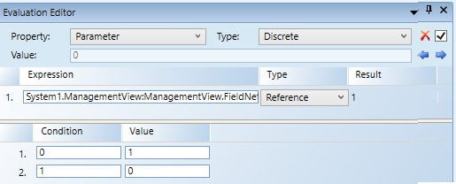

Creating a Toggle Button
The following instructions are just one example of how a button can be drawn and how a toggle button can be used to command.
Scenario: You want to click a button from within a graphic to command, for example, a binary output data point’s Present Value property to Active or Inactive.
- You have completed the steps in Preparing to Create Controls to Command Objects.
- You have reviewed Command and Navigation Properties and have a full understanding of the fields and the options available to you for configuring the command control.
- Click a drawing element and then draw a desired shape for the toggle button, for example, a circle, on the canvas or click the Import Image File
 .
. - Select the button element on the canvas, and from the Property View, expand the Colors property group. The button must have a color associated with the Background or Fill fields, so that it has a selectable area. If you leave both properties blank, the button cannot be selected. Format the button using the following properties.

- Background: Type the name of a color for the background.
- Fill: Type the name of a color for the command control outline.
- Stroke: Type a name of a color for the command control characters.
- Select the element on the canvas, and from the Property View expand the Command and Navigation properties group.

- In the Target field, drag a designated data point from System Browser. If the target designation does not specify a property, the default property is targeted. Otherwise you must specify the property by typing a period (.) and then the property name after dragging the data point into the Target field, for example:
CCProject.LogicalView:Logical.PXRack.B.Block.Hcrv;.Property_Name - In this example, drag a binary output data point from System Browser.
NOTE: If a data point is selected in System Browser, or a symbol instance of the data point is selected on the canvas, the data point information is displayed in the Extended Operations tab. From the Extended Operations tab, drag the property you want to target into the Target field. The property name is added automatically. - From the Command Name drop-down menu, select or type the command rule that you want to apply to the property. If you manually type the command name, it must match the name of the command in the Models and Functions Command Configuration section. This field is case-sensitive.
- In this example, type Write or, from the drop-down menu, select Command [Write].
- In the Parameter field, do one of the following:
- Select the values from the drop-down menu.
- Type and replace the existing values with the values the button will command to.
- For this example, type Value=0.
- An evaluation to configure the toggle for this property follows later in the procedure.
- From the Trigger drop-down menu, select how to initiate the toggle on the graphic: Single click or Double click.
- (Optional) In the Description field, type a brief description of the command that will appear in the tooltip.
- From the Cursor drop-down menu, select the cursor preference select the cursor preference that you want to display when the command is active.
- Select the Command Trigger check box to enable the toggle element to initiate and send a command.
- (Optional) From the Disabled Style drop-down menu, select a style to determine how the command control displays if it is disabled.
- For example, if the selected data point is
Out of Serviceand the command is disabled, the selected disabled style will be active at runtime to reflect this. - The Extended Tooltip check box is checked by default. It displays the following command object details: Target, Command Name, and Parameter. If enabled, the extended tooltip is added to any existing tooltips configured for the element.
- In the Evaluation Editor, with the toggle element still selected on the canvas, complete the fields as follows:

- Property: From the drop-down menu, select Parameter.
- Type: From the drop-down menu, select Discrete.
- From System Browser, drag the Target data point into the Evaluation Editor Expression field, and from the Type drop-down menu, select Reference.
- For this example, from System Browser, drag the binary output data point.
- For this example, enter the following into the Condition and Value fields:
- In the Condition field, type 0.
- In the Value field, type Value=1.
NOTE: When the data point in the expression is equal to 0(Inactive),the parameter commands the Value 1 (active). - Click Insert new Condition
 .
. - A new set of Condition and Value fields display on line 2.
- For our example, enter the following Condition and Value:
- In the Condition field, type 1.
- In the Value field, type Value=0.
NOTE: When the data point in the expression is 1 (active), the parameter commands the Value to 0 (inactive). - Click Save As
 .
.